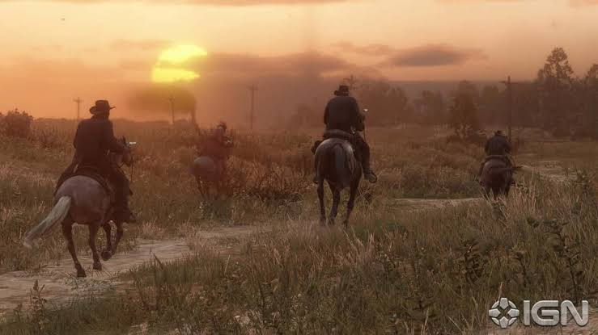

La saga de Red Dead Redemption es conocida por ofrecer algunas de las historias más profundas y envolventes en el mundo de los videojuegos.
Ambientada en los últimos años del lejano oeste estadounidense, la franquicia nos hace reflexionar sobre la lealtad, la redención y el fin de una era en la que los forajidos dominaban la frontera.
A lo largo de los juegos, conocemos a miembros de la banda de Dutch van der Linde:
| Título del Juego | Año de Lanzamiento | Año en que se ambienta |
|---|---|---|
| Red Dead Redemption 2 | 2018 | 1899 |
| Red Dead Redemption | 2010 | 1911 |
Morgan es uno de los miembros más antiguos de la banda de Van der Linde, una banda encabezada por el holandés del mismo nombre.

Si quieres conocer más sobre este increíble universo, puedes visitar la página oficial de Rockstar Games.